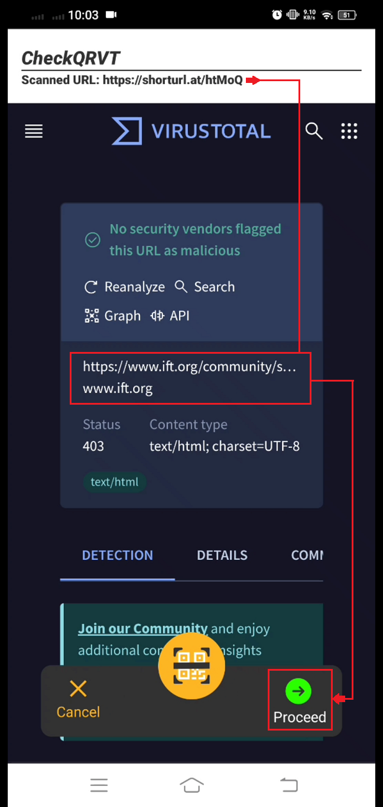

Solution
CheckQRVT is designed to bridge the gap in QR code security by acting as a secure QR code reader that performs thorough URL analysis. The app takes a unique approach to URL scanning by checking not only the initial URL scanned by the user but also any redirect URLs that the original link might lead to. This process ensures that users receive comprehensive information about where the link ultimately directs them, thus enhancing their online safety.
The app works by submitting the URL from the QR code to VirusTotal, a service that uses over 70 different antivirus scanners and URL blacklisting services to detect potential malware and phishing attempts. What sets CheckQRVT apart is its ability to identify and analyze redirected URLs, a feature that is currently not available in the VirusTotal mobile app itself. This additional step allows CheckQRVT users to see the VirusTotal results for the final URL destination, providing them with greater insight into the link’s safety.
How CheckQRVT Solves This Problem
Our CheckQRVT scanner app provides a much-needed solution by scanning and analyzing the final destination URL, not just the initial shortened link. By doing this, CheckQRVT gives users a more accurate and thorough security report, ensuring they avoid the hidden risks posed by URL shortening and redirection.
Example of CheckQRVT in Action
1. Scanning a Shortened URL: CheckQRVT scans the QR code containing a shortened URL.

2. Analyzing the Final Destination: The app redirects the shortened URL and shows the VirusTotal page results for the final destination URL.
Future Improvements
In future versions, the CheckQRVT app aims to expand its capabilities to address some of the current limitations. For instance, improvements will focus on full URL analysis rather than only the hostname or domain, reducing the chances of receiving "Item not found" errors. The project also plans to enhance its detection methods to handle obfuscated URLs, such as those hidden using JavaScript redirections or data URIs, which are commonly used in phishing attempts.
The ultimate goal is to make CheckQRVT a robust, user-friendly tool that empowers users to navigate the web securely, especially when dealing with the increasing prevalence of QR codes in everyday scenarios.